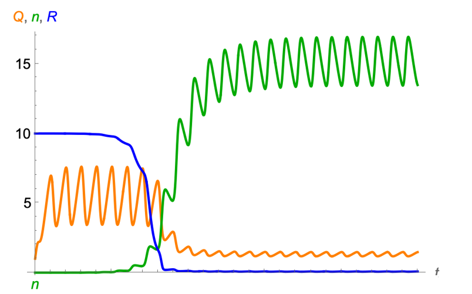
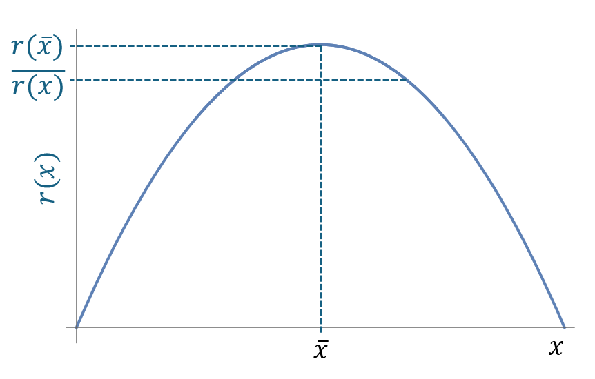
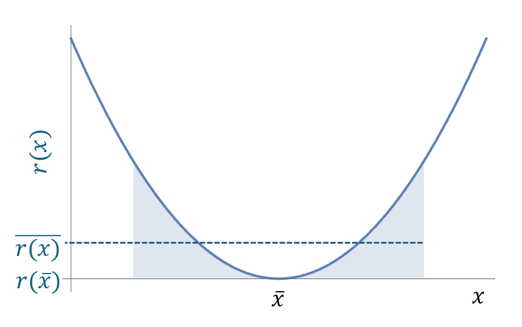

In this session, we discussed how variable environment is considered in the resource competition theory and what the storage model (Droop model) is.
Materials
The video record of the seminar can be found HERE.
The slides can be found HERE.
The Mathematica notebook is HERE.
Variables environment
The population growth in a constant environment is often defined as an exponential growth:
\[ \frac{dN}{dt} = rN \]
It can be solved as:
\[ N(t) = N_0 e^{rt} \]
or in a logarithmic form:
\[ \log(N(t)) = \log(N_0) + rt \]
For population growth in a variable environment, the growth rate \(r\) is not constant. It can be a function of time. For example, the growth rate can be a step function of time:
\[ r(t) = \begin{cases} 2, & \text{if } t < 1 \\ -1, & \text{if } 1 \leq t < 2 \\ 3, & \text{if } t \geq 2 \end{cases} \]
The density can be solved by integrating the growth rate:
\[ \log(N(t)) = \log(N_0) + \int_0^t r(t) dt\\ = \log(N_0) + \bar{r} t \]
The growth curves in a constant and variable environment are shown in the following figure.
#| standalone: true
#| viewerHeight: 1000
#| viewerWidth: 800
library(shiny)
library(bslib)
library(plotly)
library(Matrix)
Nt <- function(N0, r, t){
N0 * exp(r * t)
}
Nt_variable <- function(N0, t1, t2, t3){
nt_temp <- c()
for (i in 1:length(t1)){
nt_temp <- c(nt_temp, N0 * exp(2 * t1[i]))
}
nt10 <- nt_temp[length(nt_temp)]
for (i in 1:length(t2)){
nt_temp <- c(nt_temp, nt10 * exp( -1 * t2[i]))
}
nt20 <- nt_temp[length(nt_temp)]
for (i in 1:length(t3)){
nt_temp <- c(nt_temp, nt20 * exp( 3 * t3[i]))
}
return(nt_temp)
}
# Define UI for app that draws a histogram ----
# Define UI for app that draws a histogram ----
ui <- fluidPage(
fluidRow(
tabsetPanel(id = "tabset",
tabPanel("Population growth in constant environment",
column(4,
div(style="height: 80px;",sliderInput('n0_tab1', HTML("N<sub>0</sub>"), 0.1, min = 0.01, max = 2))
),
column(4,
div(style="height: 80px;",sliderInput('r', HTML("r"), 1.1, min = 0.1, max = 10))
)
),
tabPanel("Population growth in variable environment",
column(4,
div(style="height: 80px;",sliderInput('n0_tab2', HTML("N<sub>0</sub>"), 0.1, min = 0.01, max = 2))
)
)
)),
fluidRow(
column(12,
plotlyOutput("plot1", width=700, height=400),
plotlyOutput("plot_r", width=700, height=400)
))
)
server <- function(input, output, session) {
output$plot_r <- renderPlotly({
if (input$tabset == "Population growth in constant environment") {
# plot r in time
t <- seq(0, 3, 0.1)
r <- input$r
p <- plot_ly(x = t, y = r, type = 'scatter', mode = 'lines', name = 'r', line = list(color = 'orange', width = 4))
p
} else {
# r is a step function
t <- seq(0, 3, 0.1)
r <- c()
for (i in 1:length(t)){
if (t[i] < 1){
r[i] <- 2
} else if (t[i] < 2 & t[i] >= 1){
r[i] <- -1
} else {
r[i] <- 3
}
}
p <- plot_ly(x = t, y = r, type = 'scatter', mode = 'lines', name = 'r', line = list(color = 'orange', width = 4))
p
}
# xlabel
p <- p %>% layout(xaxis = list(title = "Time"), yaxis = list(title = "r"))
p
})
output$plot1 <- renderPlotly({
if (input$tabset == "Population growth in constant environment") {
t <- seq(0, 3, 0.1)
nt <-reactive({
Nt(input$n0_tab1, input$r, t)
})
gr1 <- data.frame(nt = nt(), t = t)
# browser()
p <- plot_ly(data = gr1) %>%
add_trace(x = ~t, y = ~nt, type = 'scatter', mode = 'lines+markers', name = 'Density')
} else {
nt <- reactive({
t1 <- seq(0, 1, 0.1)
t2 <- seq(0, 1, 0.1)
t3 <- seq(0, 1, 0.1)
Nt_variable(input$n0_tab2, t1, t2, t3)
})
gr2 <- data.frame(nt = nt(), t = c(seq(0, 1, 0.1), 1+seq(0, 1, 0.1), 2+seq(0, 1, 0.1)))
# browser()
p <- plot_ly(data = gr2) %>%
add_trace(x =~t, y = ~nt, type = 'scatter', mode = 'lines+markers', name = 'Density')
}
p <- p %>% layout(xaxis = list(title = "Time"), yaxis = list(title = "Density"))
p
})
}
# Create Shiny app ----
shinyApp(ui = ui, server = server)So, \(\bar{r}\) is the appropriate definition of growth / fitness in variable environments for unstructured populations. This is true for any kinds of environmental variation (periodic, random). It is also useful for invasion analysis (coexistence criteria).
However, things become more complicated for structured populations.
Two types of structure:
Extensive structure: Floquet exponents (Klausmeier 2008 Theoretical Ecology), Lyapunov exponents (Metz et al. 1992 TREE)
Intensive structure: let intensive variable reach attractor, then calculate growth (Litchman et al. 2009 PNAS)
The Droop model
The Droop model considers a hirarchical structure of the growth of phytoplankton. Phytoplankton cells take up resources (R) from the environment and convert them into biomass. The conversion rate is regulated by the intracellular nutrient concentration, called cell quota (\(Q\)). The growth of cells is then dependent on the cell quota dynamics. The model is defined as
\[ \frac{dN}{dt} = \mu_{\infty} \left(1 - \frac{Q_{min}}{Q}\right) N - mN\\ \frac{dQ}{dt} = v_{max} \frac{R}{R + K} - \mu_{\infty} \left(1 - \frac{Q_{min}}{Q}\right) Q\\ \frac{dR}{dt} = a(R_{in} - R) - v_{max} \frac{R}{R + K}N \]
where \(\mu_{\infty}\) is the maximum growth rate, \(Q_{min}\) is the minimum cell quota, \(m\) is the mortality rate, \(v_{max}\) is the maximum uptake rate, \(K\) is the half-saturation constant, \(R_{in}\) is the resource input, and \(a\) is the dilution rate of the resource.
To consider the periodic forcing, we can add a periodic temperature term to the maximum growth rate \(\mu_{\infty}\):
\[ \mu_{\infty} = \mu_0 e^{\mu_1 T}\\ T = T_{mean} + T_{amp} \sin\left(\frac{2\pi t}{\tau}\right) \]
where \(\mu_0\) is the maximum growth rate at the mean temperature, \(\mu_1\) is the temperature sensitivity, and \(T\) is the temperature. The temperature is modeled as a sine function with a mean temperature \(T_{mean}\), an amplitude \(T_{amp}\), and a period \(\tau\).
The behavior of the model is shown in the following figure.

You can play the interactive Droop model here:
#| standalone: true
#| viewerHeight: 1000
#| viewerWidth: 800
Sim_droop <- function(tt, rin, mu0, mu1, vmax, k, temp_mean, temp_amp, tau, qmin, m, n0, r0, q0, y = 1.3) {
nt <- c(n0)
rt <- c(r0)
qt <- c(q0)
tempt <- c(0)
mu_t <- c(0)
for(ti in 1:(tt*100)){
temp_nt <- nt[ti]
temp_rt <- rt[ti]
temp_qt <- qt[ti]
temp <- temp_mean + temp_amp * sin(2 * pi * ti / tau)
mu_inf <- mu0 * exp(mu1 * temp)
v <- vmax * temp_rt / (temp_rt + k)
drt <- ((rin - temp_rt) - v * temp_nt)/100
dqt <- (v - mu_inf * (1 - qmin / temp_qt) * temp_qt)/100
dnt <- (mu_inf * (1 - qmin / temp_qt) - m) * temp_nt / 100
temp_rt <- max(temp_rt + drt, 0)
temp_qt <- max(temp_qt + dqt, 0)
temp_nt <- max(temp_nt + dnt, 0)
nt <- c(nt, temp_nt)
rt <- c(rt, temp_rt)
qt <- c(qt, temp_qt)
tempt <- c(tempt, temp)
mu_t <- c(mu_t, mu_inf)
}
return(data.frame(nt = nt, rt = rt, qt = qt,
tempt=tempt, mut = mu_t, cc = 1:(tt*100+1)))
}
# Define UI for app that draws a histogram ----
ui <- fluidPage(
headerPanel(''),
fluidRow(
column(12,
textOutput("text"),
tags$head(tags$style("#text{color: black;
font-size: 30px;
font-style: italic;
}"
)
),
plotlyOutput("plot1", width=800, height = 400),
plotlyOutput("plot2", width=800, height = 400)
)
),
fluidRow(
column(4,
div(style="height: 80px;",sliderInput('temp_amp', HTML("Temperature amplitude"), 5, min = 0.1, max = 5))
),
column(4,
div(style="height: 80px;",sliderInput('tau', HTML("Period"), 5, min = 1, max = 50))
)
)
)
server <- function(input, output, session) {
output$text <- renderText({
"Droop model + periodic forcing"
})
# sim lv model
sim_result <- reactive({
Sim_droop(tt = 30, rin = 10, mu0 = 1, mu1 = 1, vmax=10, k = 1,
temp_mean = 0, temp_amp = input$temp_amp, tau = input$tau,
qmin = 1, m = 0.5, n0 = 1, r0 = 1, q0 = 1)
})
# browser()
output$plot1 <- renderPlotly({
p <- plot_ly(data = sim_result()) %>%
add_trace(x = ~cc, y = ~nt, type = 'scatter', mode = 'lines', name = 'N', line = list(color = 'green')) %>%
add_trace(x = ~cc, y = ~rt, type = 'scatter', mode = 'lines', name = 'R', line = list(color = 'blue')) %>%
add_trace(x = ~cc, y = ~qt, type = 'scatter', mode = 'lines', name = 'Q', line = list(color = 'orange')) %>%
#x limit
layout(xaxis = list(range = c(0, 1000))) %>%
# x label
layout(xaxis = list(title = "Time"),yaxis = list(title = "N"))
p
})
output$plot2 <- renderPlotly({
p <- plot_ly(data = sim_result()) %>%
add_trace(x = ~cc, y = ~tempt, type = 'scatter', mode = 'lines', name = 'temp', line = list(color = 'red', width = 4)) %>%
#x limit
layout(xaxis = list(range = c(0, 100))) %>%
# x label
layout(xaxis = list(title = "Time"),yaxis = list(title = "Temperature"))
p
})
}
# Create Shiny app ----
shinyApp(ui = ui, server = server)Nonlinear averaging (Jensen’s inequality)
The nonlinear averaging is a method to calculate the average of a nonlinear function. For example, the average of the growth rate in a variable environment is defined as:
\[ \bar{r} = \frac{1}{T} \int_0^T r(t) dt \]
where \(T\) is the period of the forcing. The average of the growth rate is not equal to the growth rate at the average environment. This is because the growth rate is a nonlinear function of the environment. The nonlinear averaging is important for the population growth in a variable environment.
For example, if the growth rate is a convex curve, the average of the growth rate is less than the growth rate at the average environment. The following figure shows the nonlinear averaging of a convex curve.

if the growth rate is a concave curve, the average of the growth rate is greater than the growth rate at the average environment. The following figure shows the nonlinear averaging of a concave curve.

Using the Taylor expansion, we can calculate the average of the growth rate as:
\[ \bar{r}(x) = r(\bar{x}) + \frac{1}{2} \left(\frac{d^2r}{dx^2}\right) Var(x) \]
References
Droop, M.R. (1973), SOME THOUGHTS ON NUTRIENT LIMITATION IN ALGAE†. Journal of Phycology, 9: 264-272. https://doi.org/10.1111/j.1529-8817.1973.tb04092.x